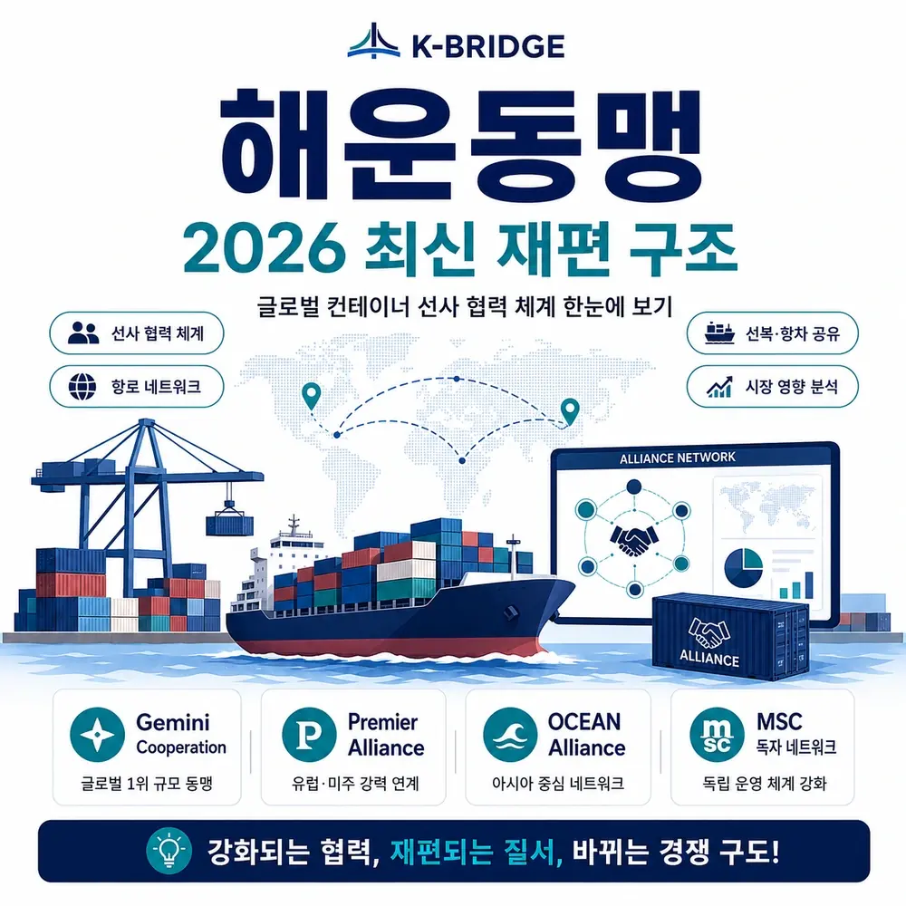
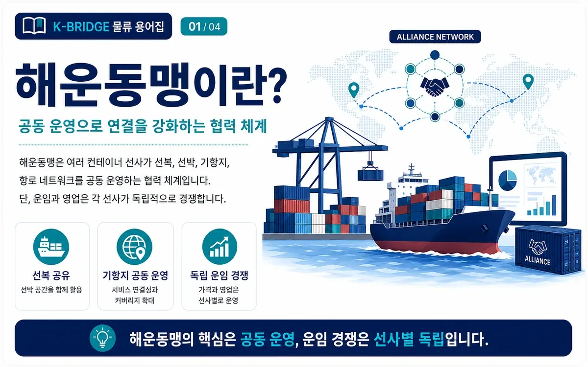
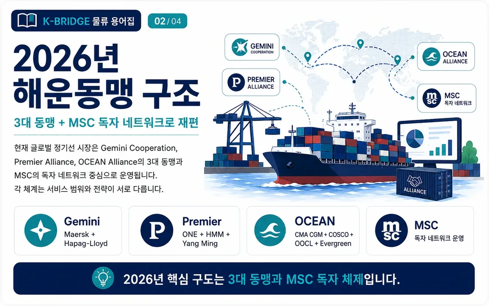
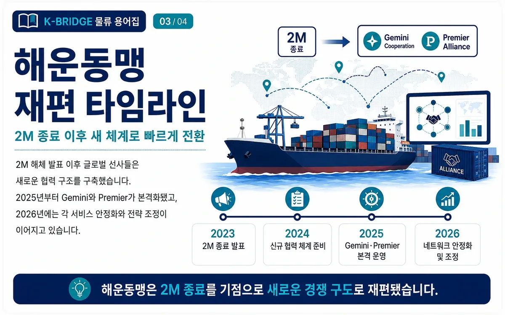
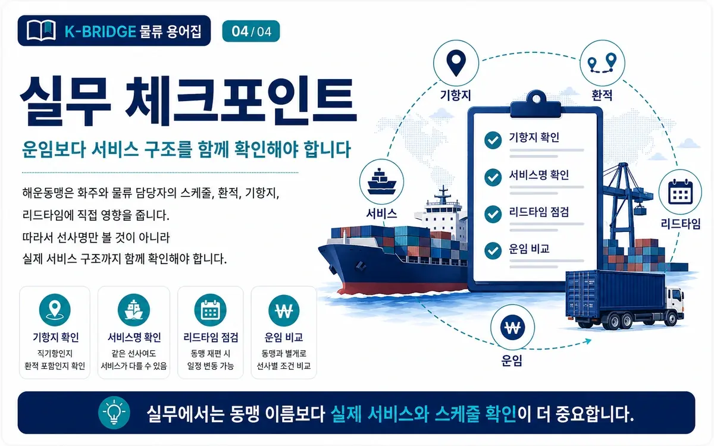

해운동맹이란? 2026 최신 Gemini·Premier·OCEAN·MSC 정리
해운동맹은 여러 컨테이너 선사가 선박과 선복을 공동 활용하고 기항지·운항 스케줄을 조정해 글로벌 서비스를 운영하는 협력 구조입니다. 2025년 대규모 재편 이후 2026년에는 Gemini Cooperation, Premier Alliance, OCEAN Alliance가 주요 동맹을 이루고 MSC는 독자 네트워크를 운영합니다.

한눈에 이해하기
2026년 현재 글로벌 컨테이너 해운 시장은 3개 주요 동맹(Gemini·Premier·OCEAN)과 MSC의 독자 East/West 네트워크가 중심입니다. 동맹은 선박·선복·운항망을 공유하지만, 선사별 고객 영업과 운임 경쟁은 별도로 이뤄집니다.

해운동맹(Shipping Alliance)이란?
해운동맹은 둘 이상의 정기 컨테이너 선사가 선박과 선복을 공유하고, 항로·기항지·운항 일정 등 서비스 운영을 협력하는 구조입니다. 미국 FMC는 글로벌 Alliance를 여러 항로에 걸친 대규모 Vessel Sharing Agreement(VSA)와 기능적으로 같은 유형으로 설명합니다.
쉽게 말해 A선사와 B선사가 각각 모든 항만에 자기 배를 따로 투입하는 대신, 일부 서비스에서 선박을 공동 배치하고 상대 선박의 공간을 나눠 사용함으로써 더 넓은 네트워크와 정기성을 확보하는 방식입니다.
예전의 ‘해운동맹’과 지금의 글로벌 Alliance는 구분해야 합니다
과거의 해운 Conference는 회원 선사들이 공동 운임이나 요율을 정하는 성격이 강했습니다. 반면 오늘날 주요 글로벌 컨테이너 Alliance의 중심은 선박·선복·스케줄·기항지 등 운영 협력입니다. 선사들은 같은 서비스의 선박을 공유하더라도 고객 계약, 영업, 서비스 부가조건에서는 서로 경쟁합니다.
핵심 포인트: 같은 동맹 선사의 컨테이너가 같은 선박에 실릴 수 있지만, 견적 운임과 계약 조건까지 같은 것은 아닙니다.
선사들은 왜 해운동맹을 만들까요?
대형 선박의 공간을 효율적으로 사용
선복을 공동 활용하면 각 선사가 모든 노선에 단독으로 선박을 투입할 때보다 적은 자원으로 더 큰 서비스망을 구성할 수 있습니다.
직항·환적 연결성을 확대
파트너 선사의 선박과 서비스에 슬롯을 확보해 단독 네트워크보다 다양한 항만과 주간 서비스를 제공할 수 있습니다.
기항·스케줄을 공동 설계
서비스별 선박 배치, 기항 순서, 허브·셔틀 연결을 최적화해 운항 효율을 높이고 중복 투입을 줄입니다.
수요와 공급 변화에 유연하게 대응
동맹 내 선복과 네트워크를 조정하면서 계절 수요, 항만 혼잡, 항로 우회와 같은 변동에 대응할 수 있습니다.

2026년 최신 해운동맹 구조
미국 FMC가 정리한 현재 주요 글로벌 구조는 Gemini Cooperation, OCEAN Alliance, Premier Alliance의 3개 동맹입니다. 여기에 세계 최대 컨테이너 선사인 MSC는 2025년 2월부터 독자 East/West 네트워크를 운영하고 있습니다.
| 구분 | 회원사 / 운영사 | 출범·기간 | 핵심 특징 |
|---|---|---|---|
| Gemini Cooperation | Maersk, Hapag-Lloyd | 2025년 2월 출범 | 허브·셔틀 중심 네트워크, 높은 스케줄 신뢰도를 핵심 목표로 운영 |
| Premier Alliance | ONE, HMM, Yang Ming | 2025년 2월부터 5년 | 아시아–북미·유럽·지중해·중동 등 주요 동서항로 협력 |
| OCEAN Alliance | CMA CGM, COSCO SHIPPING, Evergreen, OOCL | 협력 2032년까지 연장 | 2026 DAY 10 기준 41개 서비스, 5.3M TEU 규모 운항 발표 |
| MSC Standalone | MSC | 2025년 2월 독자망 전환 | 34개 루프, 5개 주요 동서 항로 중심 독자 네트워크 |
주의: Premier Alliance는 MSC와 아시아–유럽 일부 서비스에서 슬롯 교환 협력을 합니다. 이는 MSC가 Premier Alliance에 가입했다는 의미가 아니라 별도의 공간 교환 협력입니다.
동맹별 특징을 쉽게 보면
1. Gemini Cooperation — Maersk + Hapag-Lloyd
Gemini는 2025년 2월 1일 출범했습니다. 초기 설계는 주요 허브를 중심으로 Mainliner와 전용 Shuttle을 연결하는 구조이며, 완전한 네트워크 전개 이후 90% 이상의 스케줄 신뢰도를 목표로 제시했습니다. 2026년에도 항로 최적화가 이어지고 있으며, 8월 기준 AE15·AE19 등 일부 서비스가 희망봉 우회에서 수에즈 경유로 전환되는 등 홍해·수에즈 상황에 맞춘 단계적 조정이 진행 중입니다.
2. Premier Alliance — ONE + HMM + Yang Ming
Premier Alliance는 기존 THE Alliance의 협력을 이어받아 2025년 2월부터 새 이름으로 운영되고 있습니다. ONE·HMM·Yang Ming 3사가 참여하며, 아시아–북미 서안·동안, 아시아–북유럽, 아시아–지중해, 아시아–중동 등 주요 동서항로가 협력 범위에 포함됩니다.
3. OCEAN Alliance — CMA CGM + COSCO + Evergreen + OOCL
OCEAN Alliance는 2017년 시작된 기존 체제를 유지하면서 회원사 구성이 가장 안정적인 편입니다. 4개 회원사는 협력 기간을 2032년 3월 31일까지 연장했고, CMA CGM이 발표한 2026 DAY 10 Product는 394척, 41개 서비스, 총 5.3M TEU 규모의 네트워크를 제시했습니다.
4. MSC — 독자 East/West Network
MSC는 Maersk와의 2M VSA가 종료된 뒤 2025년 2월부터 주요 동서항로에서 독자 네트워크를 운영합니다. MSC 공식 안내 기준 현재 East/West 네트워크는 5개 주요 Trade에 34개 Loop를 구성하고 있으며, 필요에 따라 일부 선사와 Slot Swap을 병행합니다.

왜 2025년에 해운동맹 지도가 크게 바뀌었을까요?
정리: 2025년 재편은 “동맹이 사라진 것”이 아니라, 2M과 THE Alliance가 종료·전환되면서 Gemini와 Premier가 새 체제로 등장하고 MSC가 독자망으로 이동한 것으로 이해하면 쉽습니다.

화주 입장에서 해운동맹을 볼 때 체크할 것
화주에게 중요한 것은 “어느 동맹이 더 크냐”보다 내 출발항·도착항에서 실제로 어떤 서비스가 제공되는지입니다. 같은 동맹 안에서도 선사별 상품과 서비스 조합이 다를 수 있습니다.
- 직항인지 환적인지: 같은 동맹 서비스라도 Port Pair에 따라 직항 또는 허브 환적으로 나뉩니다.
- 부산·광양 등 한국 기항 여부: 네트워크 개편이나 서비스 조정 때 기항지가 바뀔 수 있습니다.
- 실제 Transit Time: 안내된 표준 운송일수뿐 아니라 현재 항차의 Cut-off, ETD, ETA를 확인합니다.
- Blank Sailing·Port Skip: 수요 조정이나 항만 혼잡으로 결항, 기항 생략, 항차 지연이 발생할 수 있습니다.
- 홍해·수에즈 운항 여부: 2026년 일부 서비스가 수에즈로 단계적 복귀하고 있지만 안전 상황에 따라 다시 변경될 수 있습니다.
- 운임 외 총비용: 환적 추가 리드타임, Demurrage·Detention, 내륙운송, 터미널 비용까지 함께 비교해야 합니다.
K-BRIDGE 실무 포인트: 선사 또는 동맹 이름만으로 운송 품질을 판단하기보다 현재 스케줄, 직항 여부, 연결 항만, 환적 횟수, 선복 상황을 함께 비교하는 것이 안전합니다.
자주 묻는 질문
Q. 2026년 현재 주요 해운동맹은 몇 개인가요?
Gemini Cooperation, Premier Alliance, OCEAN Alliance의 3개 주요 글로벌 동맹이 있습니다. MSC는 별도의 독자 East/West 네트워크를 운영합니다.
Q. MSC는 Premier Alliance 회원사인가요?
아닙니다. MSC는 독자 네트워크를 운영합니다. 다만 Premier Alliance와 아시아–유럽 일부 서비스에서 Slot Exchange 협력을 하고 있어 서비스표만 보면 함께 운영하는 것처럼 보일 수 있습니다.
Q. 같은 동맹이면 운임도 모두 같나요?
그렇지 않습니다. 동맹은 주로 선박·선복·운항망을 공유하는 구조이며, 각 선사는 고객별 운임, 영업, 계약 조건에서 독립적으로 경쟁합니다.
Q. 2M Alliance와 THE Alliance는 지금도 있나요?
2M은 2025년 1월 종료됐고 THE Alliance도 기존 형태의 운영을 마쳤습니다. 이후 Maersk·Hapag-Lloyd는 Gemini, ONE·HMM·Yang Ming은 Premier로 재편됐습니다.
Q. 동맹이 바뀌면 한국 수출입 화물에는 어떤 영향이 있나요?
기항항, 직항 여부, 환적 허브, 주간 빈도, Cut-off, Transit Time이 조정될 수 있습니다. 그래서 계약 시점의 실제 서비스 스케줄을 다시 확인해야 합니다.
선사·항로 선택이 어렵다면 K-BRIDGE와 실제 스케줄을 비교하세요
출발지, 도착지, 품명, 물량, 희망 출항일을 알려주시면 동맹 이름이 아니라 실제 직항·환적 구조, 선복, 운송일수와 비용을 기준으로 해상운송안을 검토해드립니다.